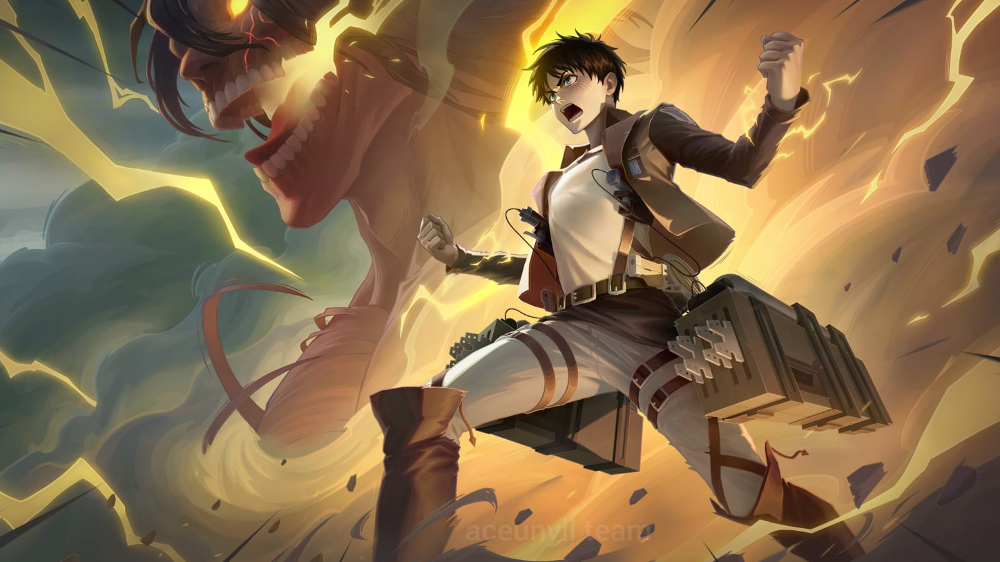

A young martial artist on a journey to defeat the Evil God that dwells on him. ” Among the four renowned members of Forsaken Light, one young man from the East stands out. Known as Yin, this simple and righteous martial artist sometimes exudes a sinister aura, creating a stark contrast that leaves many wary of him. Few know that his wild and violent behavior stems from the Evil God, Lieh, dwelling within him. He is the reason Yin left his home in the Cadia Riverlands—to hone himself in the Land of Dawn and find a way to defeat Lieh. But Yin's struggles in this foreign land have had the opposite effect; as a being that thrives on chaos, the more Yin fights, the faster Lieh can recover his power. Thus, Lieh began to impart his power to Yin, watching him sink deeper into madness with each act of righteousness and chivalry, and leading him toward the self-destruction Lieh desires. However, even knowing the risks, Yin continues to wield this power—because for him, abandoning his code and ignoring the suffering of others would make him no better than Lieh. Yin never backs down from a challenge, god or no god.
Fun Fact: Yin’s character design in Mobile Legends: Bang Bang is heavily inspired by anime. His alter-ego transformation into the Evil God "Lieh" mirrors the dynamic between Yuji Itadori and Sukuna from the popular anime series Jujutsu Kaisen, while his ultimate move resembles Sukuna's "Malevolent Shrine